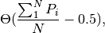
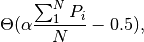
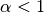
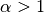
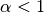
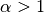

Intelligence
0.0.8
Intelligence
0.0.8
Han has been discussing with me about building human dynamics by making analogy to neural systems.
The idea is to treat every human as an activation function which is connected to each other to form a large network. The trouble was how to deal with information input and output from outside of the group which is similar to external stimulation in neural systems.
Here we develop a model for wechat groups instead of general human dynamics. We assume everyone share all the information in the group.
There are several aspects to be defined.
Such a general model seems to be good enough. However, we have to define all different types of human first.
Being average: takes in all the opinions of other participants and work out an average.

where  is the step function or Heaviside function.
is the step function or Heaviside function.
Being extreme: exaggerates whatever is obtained from average。

where  is the extreme factor. For linear summations (euclidean metric), this is effectively pessimism () or optimism ().
is the extreme factor. For linear summations (euclidean metric), this is effectively pessimism () or optimism ().
Synchronized to other people. The simplest case is to synchronize to one of the members in the group.
We need to build a program to calculate an example and see if it makes sense.
import numpy as np
# Define Heaviside function; returns 0 if x<0.5, otherwise returns 1
def hsh(x):
#return (0.5 * (np.sign(x-0.5) + 1))
return int(np.piecewise(x, [x < 0.5, x >= 0.5], [0, 1]) )
# Test of functions
print hsh(0.1), hsh(0.5), hsh(0.6)
0 1 1
In this example, we simulate the opinion stream of each person as well as the whole system which is determined by the pool.
For convinience we establish a group of 4 person.
# Define the pool
pool = np.random.randint(2, size=4).tolist();
print pool
[1, 0, 0, 1]
# Define four characters of the group
## First character is an averagist
def avgist(x):
return hsh( np.sum(x)/len(x) )
## The second character is pessimist
def pesist(x,alpha=0.6):
return hsh( alpha * np.sum(x)/len(x) )
## The third character is a optimist
def optist(x,alpha=2):
return hsh( alpha * np.sum(x)/len(x) )
## The fourth synchronizes with the first character, i.e., averagist
def synist(x):
return x[0]
# Test characters
print avgist(pool), pesist(pool), optist(pool), synist(pool)
print np.array([avgist(pool), pesist(pool), optist(pool), synist(pool) ])
0 0 1 1
[0 0 1 1]
# Define iterator
def iter(initpool,n): # initpool: the inital pool; n: number of iterations
poolM = np.array(initpool);
stateM = np.array([poolM]);
for i in range(n):
poolM = np.array( [ avgist(poolM), pesist(poolM), optist(poolM), synist(poolM) ] )
stateM = np.append( stateM, np.array([poolM]) ,axis=0 )
return stateM
print(iter([1,1,0,1],10), \
iter([1,1,0,1],10), \
iter([1,0,1,1],10)
)
(array([[1, 1, 0, 1],
[0, 0, 1, 1],
[0, 0, 1, 0],
[0, 0, 0, 0],
[0, 0, 0, 0],
[0, 0, 0, 0],
[0, 0, 0, 0],
[0, 0, 0, 0],
[0, 0, 0, 0],
[0, 0, 0, 0],
[0, 0, 0, 0]]), array([[1, 1, 0, 1],
[0, 0, 1, 1],
[0, 0, 1, 0],
[0, 0, 0, 0],
[0, 0, 0, 0],
[0, 0, 0, 0],
[0, 0, 0, 0],
[0, 0, 0, 0],
[0, 0, 0, 0],
[0, 0, 0, 0],
[0, 0, 0, 0]]), array([[1, 0, 1, 1],
[0, 0, 1, 1],
[0, 0, 1, 0],
[0, 0, 0, 0],
[0, 0, 0, 0],
[0, 0, 0, 0],
[0, 0, 0, 0],
[0, 0, 0, 0],
[0, 0, 0, 0],
[0, 0, 0, 0],
[0, 0, 0, 0]]))
© 2018, Lei Ma| GitHub| Statistical Mechanics Notebook | Index | Page Source| changelog| Created with Sphinx